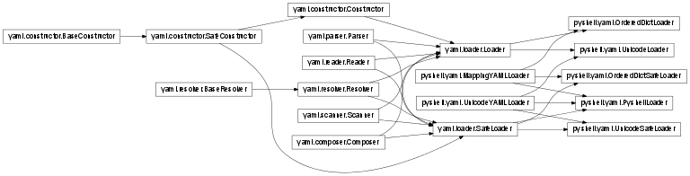
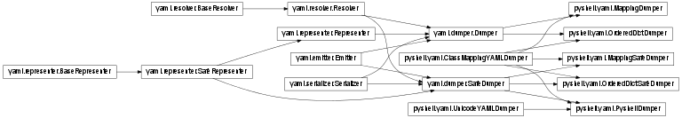

This module is designed to provide a few features to PyYAML, the YAML parser in python.
Users can import the custom loaders and dumpers described in yaml compatible Loaders and yaml compatible Dumpers to load and dump arbitrary YAML files:
yaml.load(stream, Loader=MyLoader)
yaml.dump(data, Dumper=MyDumper)
If you are an end user, and just want a customized loader or dumper, see yaml compatible Loaders and yaml compatible Dumpers. If you want to write ordered YAML files in pure unicode, use PyshellLoader and PyshellDumper respectively.
For developers, there are two interfaces to this module, a class-inheritance based Mixin interface, and a functional interface. The Mixin Interface uses custom class mixins to create new loaders which have the desired behavior. Using Mixins to create custom loaders and dumpers has the advantage that it does not modify the internal PyYAML behavior, so other libraries and classes which might use yaml won’t be affected by any applied changes. The Function Interface does modify the behaviors of any yaml laoders and dumpers it acts upon, and by default, it modifies the yaml included loaders and dumpers. The advantage is that you can modify the default dumpers and loaders once and then forget about it, the disadvantage is that those changes might propagate to other modules which use yaml.
Note
Since this module changes the parsing and dumping behavior of PyYAML, it is not compatible with the libyaml implementations of the Parser.
The loader interface provides yaml.Loader objects which can be used directly:
yaml.load(stream, Loader=UnicodeLoader)
These loaders use the mixin interface described in Mixin Interface. Loader objects implement the entirety of the YAML parsing engine, so customization of any of the YAML base classes can be done via loaders.
A yaml.Loader which uses OrderedDict instead of regular dictionaries.
A yaml.SafeLodaer which uses OrderedDict instead of regular dictionaries.
A yaml.Loader which uses unicode for all keys and strings.
A yaml.SafeLodaer which uses unicode for all keys and strings.
A yaml.Loader which uses unicode by default and OrderedDict.

The dumper interface provides yaml.Dumper objects which can be used directly:
yaml.dump(data, stream, Dumper=UnicodeLoader)
These dumpers use the mixin interface described in Mixin Interface. Dumper objects implement the entirety of the YAML parsing engine, so customization of any of the YAML base classes can be done via dumpers.
A yaml.Dumper which dumps OrderedDict as a regular dict.
A yaml.SafeDumper which dumps OrderedDict as a regular dict.
A yaml.Dumper that dumps all keys and strings as unicode literals.
A yaml.SafeDumper that dumps all keys and strings as unicode literals.
A yaml.Dumper which dumps any mapping as regular mappings.
A yaml.SafeDumper which dumps any mapping as regular mappings.
A yaml.SafeDumper which uses unicode by default and OrderedDict.

The Mixin Interface provides classes which can be used with the default yaml loaders and dumpers to create new loaders and dumpers with modified behavior. You should always ensure to inherit from the yaml loaders and dumpers last, to ensure that the required methods are overwritten by the mixins here.
Many mixins will work without providing any subclass content. For example, to make a unicode-compatible loader, you might use:
class MyUnicodeLoader(UnicodeYAMLLoader, yaml.SafeLoader):
pass
In fact, this is how this module defines the UnicodeSafeLoader.
A YAML loader that loads unicode values everywhere.
This MixIn can be used for SafeLoaders and Regular Loaders. It doesn’t work alone.
A YAML loader that loads mappings into ordered dictionaries.
This MixIn can be used for SafeLoaders and Regular Loaders. It doesn’t work alone.
It has an abstract attribute, CUSTOM_MAPPING which must be set to the desired mapping type in a subclass before use.
Original Design From: https://gist.github.com/enaeseth/844388
The functional interface provides three functions which implement the functionality found in the rest of the class through a functional interface. The only functionality not implemented is the mapping loader MappingYAMLLoader.
By default, the functions below take no arguments, and then apply their modifications to yaml.Loader, yaml.SafeLodaer and yaml.Dumper.
This method forces the PyYAML library to dump unicode objects when dumping YAML instead of producing YAML unicode tags.